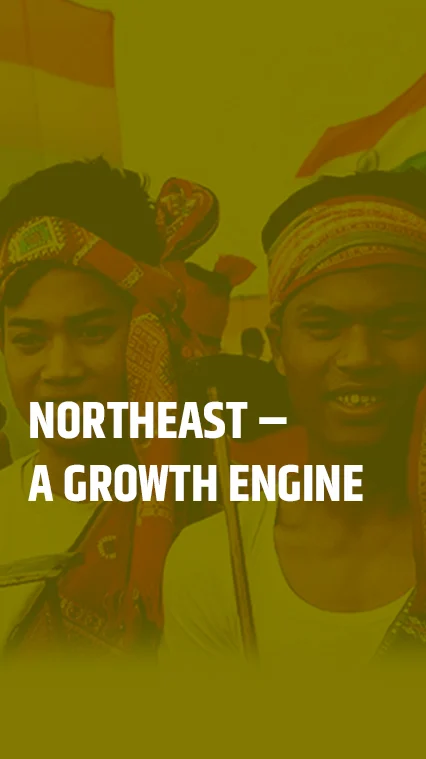
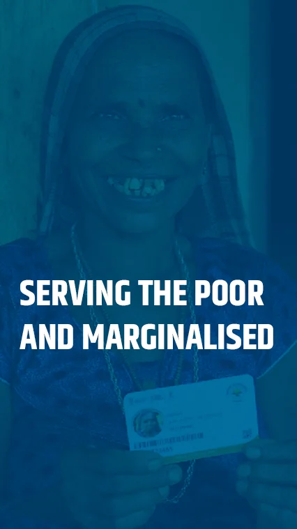
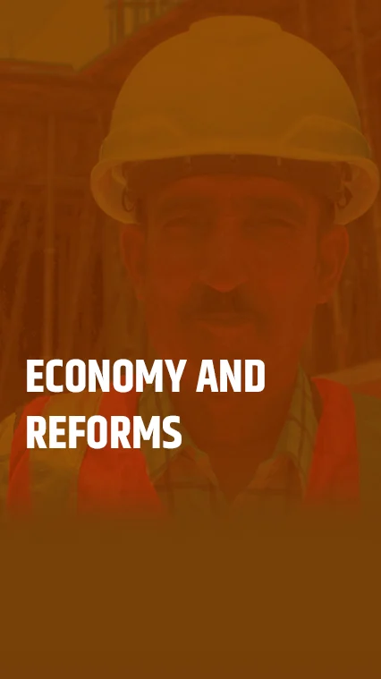
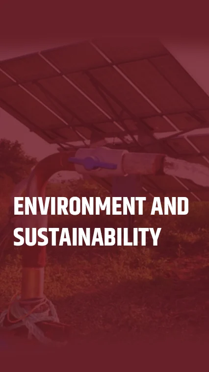
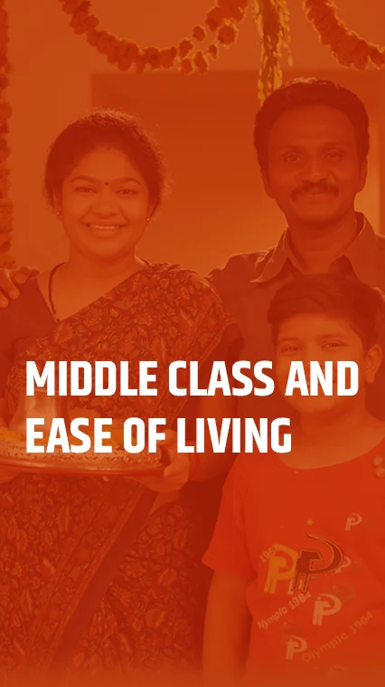
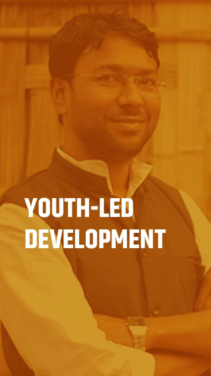
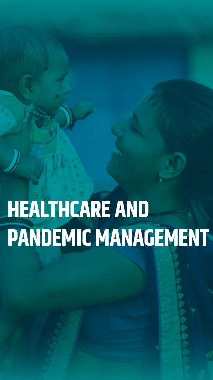
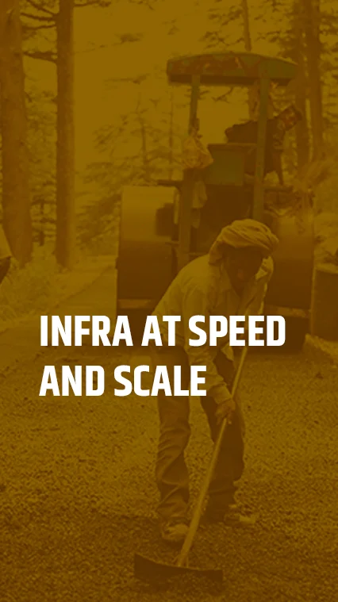
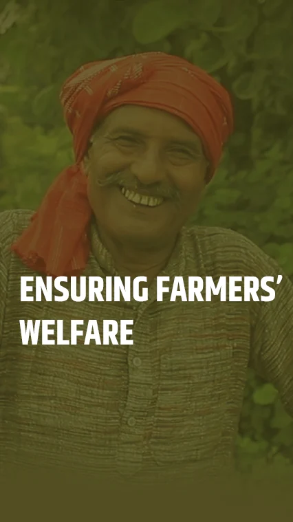

Home
Infographics
Ease of Doing Business
Ease of Living
Youth-led
Healthcare
Infrastructure
Women
Farmer Welfare
National Security
Growth Engine
Serving the Poor
Economy
Cultural Heritage
Tech-powered India
Environment & Sustainability
Menu
Home
Infographics
- Ease of Doing Business
- Ease of Living
- Youth-led
- Healthcare
- Infrastructure
- Women
- Farmer Welfare
- National Security
- Growth Engine
- Serving the Poor
- Economy
- Cultural Heritage
- Tech-powered India
- Environment & Sustainability
Press Conference by BJP National President Shri J.P. Nadda at BJP Head Office, New Delhi.
Infographics
View More

View More

View More

View More
View More
View More

View More
View More

View More

View More

View More

View More
View More

View More
View More
View More
View More
View More
View More
View More
View More
View More
View More
View More
View More
View More
View More
View More
‹
›
8 साल रहे, बेमिसाल। बदले हालात, सुलझे सवाल। नए भारत की शिल्पकार, मोदी सरकार...
Download
8 साल लंबी success स्टोरी को जानने के लिए नरेन्द्र मोदी ऐप पर बनें 8 साल के आइकॉन पर क्लिक कीजिये।
Download